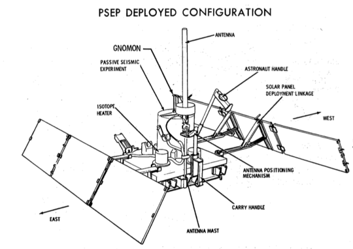
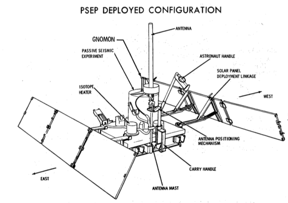

SISMOMETRO
 

El sismómetro desplegado en la Luna como parte de las misiones Apollo representó un paso crucial en
la exploración científica de nuestro vecino celestial. Estos instrumentos, específicamente el
sismómetro desplegado durante la misión Apollo 11, fueron diseñados para registrar y analizar la
actividad sísmica lunar.
El sismómetro en cuestión fue conocido como el "Sismómetro de Despliegue Pasivo" (PSP, por sus
siglas en inglés) y fue instalado por los astronautas Neil Armstrong y Buzz Aldrin en la superficie
lunar el 20 de julio de 1969. Aunque la sonda tenía un diseño ingenioso, lamentablemente, su vida
útil fue relativamente corta, ya que dejó de enviar datos aproximadamente después de tres semanas de
operación.
El PSP consistía en una serie de sensores sísmicos conectados a una unidad de control central. Su
principal objetivo era detectar y medir eventos sísmicos, como temblores lunares o impactos de
meteoroides. A través de la recopilación de estos datos, los científicos esperaban obtener
información valiosa sobre la estructura interna de la Luna y su actividad geológica.
A pesar de su breve período de funcionamiento, el PSP proporcionó datos significativos y contribuyó
al entendimiento de la geología lunar. Reveló que la Luna tenía menos actividad sísmica de la
esperada, lo que llevó a nuevas preguntas sobre la composición y la formación de nuestro satélite
natural. Aunque las misiones Apollo posteriores también llevaron sismómetros, el PSP de Apollo 11
marcó el inicio de los estudios sísmicos en la Luna, preparando el terreno para investigaciones más
extensas en misiones futuras.